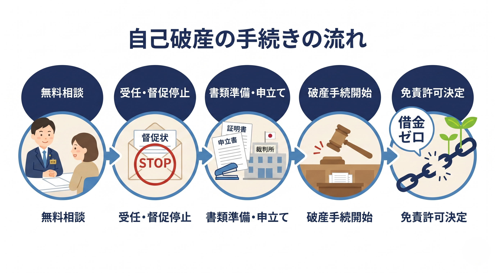

「自己破産」と聞くと、どんなイメージを持たれるでしょうか。人生が終わってしまう、すべてを失う、周囲に知られて社会的に孤立する――そんなふうに感じている方が少なくありません。
私は福井で15年にわたり借金問題のご相談を受けてきましたが、実務での実感として、自己破産を過度に恐れている方がほとんどです。実際には、自己破産は法律で認められた正当な手続きであり、多くの方が手続き後に「もっと早く相談すればよかった」とおっしゃいます。
このコラムでは、自己破産の基本的な仕組みから手続きの流れ、生活への影響まで、よくある誤解を解きながらお伝えします。

自己破産とは何か ― 借金をゼロにする法的手続き
自己破産とは、裁判所に申立てを行い、免責（返済義務の免除）を受ける制度です。裁判所が「この人には返済する力がない」と認めた場合に、「免責」という決定が出され、借金がゼロになります。
ここで大切なのは、自己破産は法律（破産法）に基づく制度であり、借金で苦しんでいる方を経済的に立て直すためにあるということです。誰かに迷惑をかける悪いこと、ではありません。国が「もう一度やり直していいですよ」と認めてくれる手続きだと考えてください。
自己破産の流れ ― 受任通知から免責決定まで
自己破産の手続きは、おおまかに次のような流れで進みます。
- 弁護士への相談・依頼
まず弁護士にご相談いただき、自己破産が最適かどうかを一緒に判断します。 - 受任通知の発送
弁護士が各債権者に「受任通知」を送ります。これにより、債権者からの督促や取立てがストップします。福井で相談を受ける中で、この段階で「電話が鳴らなくなって眠れるようになった」とおっしゃる方がとても多いです。 - 書類の準備・申立て
収入や支出、財産の状況をまとめた書類を準備し、裁判所に申立てを行います。必要な書類は弁護士がご案内しますので、一つずつ揃えていけば大丈夫です。 - 裁判所での手続き
裁判所が書類を審査し、場合によっては裁判官との面談があります。 - 免責決定
裁判所が免責を認めれば、借金の返済義務がなくなります。
依頼から免責決定まで、一般的には4か月から半年程度です。
「同時廃止」と「管財事件」の違い
自己破産には、大きく分けて「同時廃止」と「管財事件」の2つの進め方があります。
同時廃止は、処分すべき大きな財産がない場合に使われる手続きです。破産手続きの開始と同時に手続きが終了するため、比較的短期間で、費用も抑えられます。会社員の方で、大きな財産がない場合は、同時廃止になることが多いです。
管財事件は、一定以上の財産がある場合や、借金の原因について詳しい調査が必要な場合に選ばれます。裁判所が「破産管財人」という弁護士を選任し、財産の調査・換価を行います。管財事件では、管財人への報酬（通常20万円程度）が別途かかるため、同時廃止よりも費用が高くなります。
どちらの手続きになるかは、ご相談時に見通しをお伝えできます。
自己破産後の生活 ― よくある誤解を解きます
自己破産について、多くの方が誤解されている点があります。15年の経験の中で特によく聞く質問をまとめました。
- 「戸籍や住民票に記録される？」
いいえ。戸籍にも住民票にも自己破産の記録は載りません。 - 「選挙権がなくなる？」
なくなりません。選挙権・被選挙権ともに影響はありません。 - 「会社にバレる？」
自己破産をしたことが勤務先に通知される仕組みはありません。官報には掲載されますが、一般の方が官報を日常的にチェックすることはまずないでしょう。 - 「家族に迷惑がかかる？」
自己破産はあくまで本人の手続きです。家族が保証人になっていない限り、家族の財産や信用情報には影響しません。 - 「一生クレジットカードが使えない？」
信用情報機関に登録される期間（いわゆるブラックリスト）は、一般的に5年から7年程度です。その後は再びカードを作ることが可能です。
実際の解決事例
30代の男性会社員の方のケースをご紹介します。
この方は、生活費の不足をカードローンやクレジットカードのリボ払いで補ううちに、借金が約570万円まで膨らんでしまいました。毎月の返済額が収入の大部分を占め、生活が立ち行かなくなってご相談にいらっしゃいました。
ご状況を伺ったところ、大きな財産はなく、借金の原因にも特段の問題がなかったため、同時廃止での自己破産を選択しました。弁護士が受任通知を送った時点で督促が止まり、その後は裁判所への申立て、免責決定とスムーズに手続きが進みました。
結果として約570万円の借金がすべて免責（免除）となり、現在はこれまでどおり会社員として働きながら、無理のない生活を送っておられます。
まとめ

自己破産は、借金で苦しむ方のために法律が用意した「やり直し」の手段です。怖いもの、恥ずかしいものではありません。
福井で借金のことでお悩みでしたら、まずはお気軽にご相談ください。相談したからといって、必ず依頼しなければならないわけではありません。今のご状況を整理し、どんな選択肢があるかを一緒に考えるところから始めましょう。